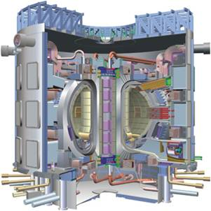
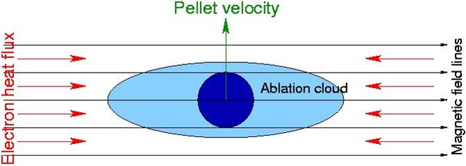
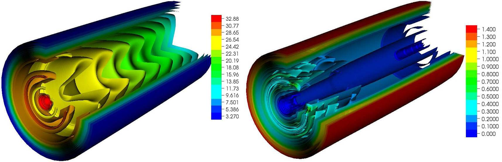
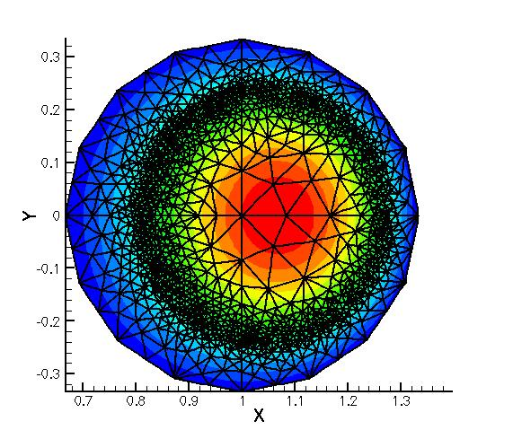
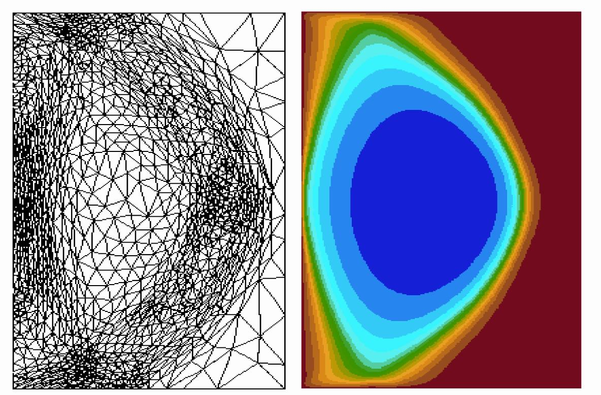
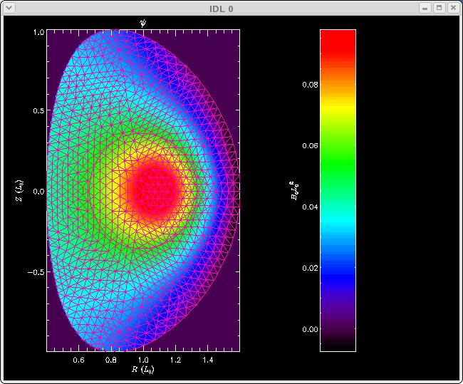

Fusion
Pellet ablation for tokamak fueling
ITAPS Personnel: Roman Samulyak (BNL)
Fusion Personnel: General Atomics
Project Status: Active
In a recent collaboration with fusion scientists at General Atomics, we used the FronTier-Lite front tracking library to study the physics of pellet ablation for tokamak fueling. Obtaining a deep understanding of this phenomenon is necessary for the successful operation of ITER, an international research collaboration that aims to demonstrate the scientific and technical feasibility of fusion power. Plans call for fueling ITER by injection of frozen deuterium pellets which ablate when interacting with the hot fusion plasmas; the lower the quasi-steady state ablation rate, the higher the fueling efficiency. However the physical processes associated with this ablation are not clearly understood and advanced modeling and simulation tools are being used to shed light on these processes.
|  |  |
|---|
Using the front tracking technology developed by the ITAPS Center, we have developed novel mathematical models and computational software for the numerical simulation of the pellet ablation for tokamak fueling. Using this software, the pellet ablation rate and lifetime in magnetic fields were systematically studied for the first time and compared with theory and experimental databases. Simulations revealed several new features of the pellet ablation such as, contrary to expectations, the ablation rate depends strongly on the magnetic field strength. This new feature implies that pellets traversing strong plasma gradients, as in the edge pedestal region of the ITER plasma, could have significantly lower ablation rates (higher fueling efficiency) if injected at higher velocity.
|  |
|---|
Adaptive Loops for Extended Magnetohydrodynamics Modeling
ITAPS Personnel: Mark Shephard (RPI), Ken Jansen (RPI)
Fusion Personnel: Steve Jardin (PPPL), Jin Chen (PPPL)
Project Status: Acive
The SciDAC-funded ``Center for Extended MHD modeling (CEMM)'' has extensively used a 3D MHD code to simulate global instabilities in magnetic fusion devices. The ITAPS team is working with CEMM fusion scientists to extend the MHD high-order finite element software (M3D-C1) to interface with unstructured mesh adaptation technologies. This enables them to gain the efficiencies of using adaptive meshes (see the figure below for isotropic and anisotropic adapted meshes) and allows them to model general curved reactor domains (see the rightmost image in the Figure). In a related effort, we are working to apply new interface smoothing capabilities in Mesquite to tokamak meshes from the Princeton Plasma Physics Lab (PPPL) with the goal of improving quality while preserving grid alignment with magnetic field lines. In a collaborative effort, ITAPS, CEMM, and TOPS researchers have also developed flexible data structures and interfaces to enable M3D-C1 to use advanced linear algebraic solvers. In the new extended software, SuperLU_dist is used to factor the large sparse matrix associated with the M3D-C1 implicit formulation for the 2F MHD equations every 5-20 time-steps instead of every time-step as in the original software. In the intervening time steps, the last factored matrix is used as a very effective preconditioner for a GMRES-based iterative solve in PETSc, which then requires only a few iterations to converge. In the initial application, this resulted in a net speed increase of about 70% for a 2D "approach to 2F equilibrium with flow in NSTX" application. This accomplishment is regarded as a major milestone in transitioning M3D-C1 into an efficient and scalable 3D nonlinear 2F MHD code.
| Isotropic Mesh | Anistropic Mesh | Curved Mesh |
|---|---|---|
|  |  |  |
The current ITAPS work is focused on an M3D-C1 adaptive loop simulation of a reconnection problem. Major work includes:
- Proper definition of periodic boundary conditions such that they are consistently handled in iMesh, iGeom, and iMeshP.
- Transfer of field information to the adapted mesh such that conservation of energy and magnetic flux is satisfied
- Higher quality error indication routines.
- Spatial stabilization and variational multiscale models for Extended MHD simulations.
First wall shield design for ITER.
ITAPS Personnel: Tim Tautges (ANL)
Project Status: Acive
The success of ITER depends on the ability of components to withstand high fluences of 14MeV neutrons and the heat loads and other effects of this radiation exposure. This is of particular importance in the diagnostic ports and plasma-facing components; the US is responsible for providing 20% of these components as part of its ITER commitment. Fast ray-tracing on facet-based models derived from CAD geometry enables 3D analysis of radiation transport in these components. The ITAPS solution transfer service is used to provide radiation heating as a source term for fluid flow and heat transfer calculations. These analyses are an integral part of the design process for these components, ensuring they can withstand radiation-induced heating and damage while maintaining structural integrity. This work is funded by the US ITER project.